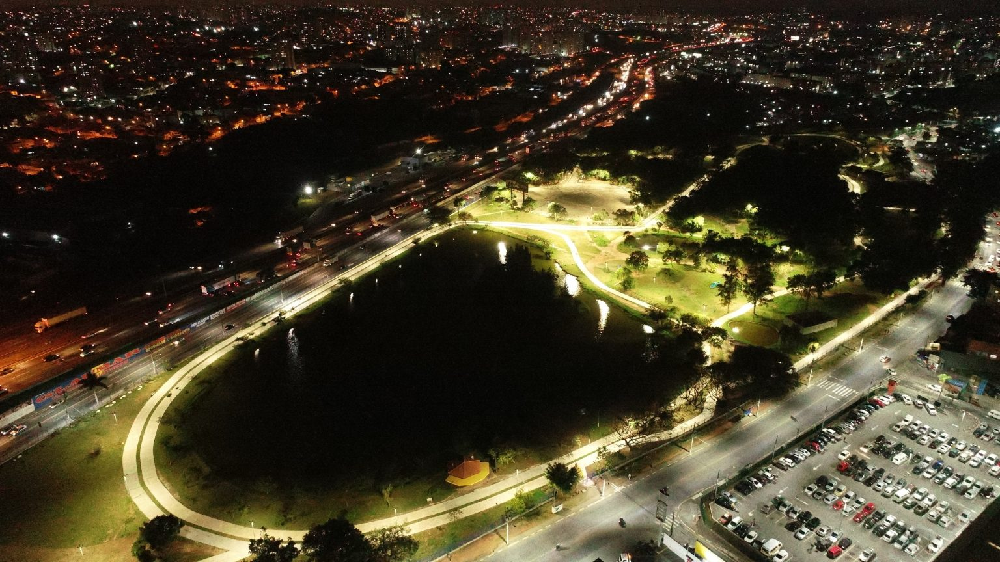
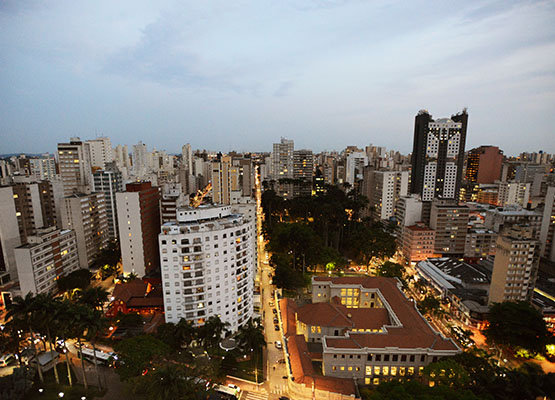
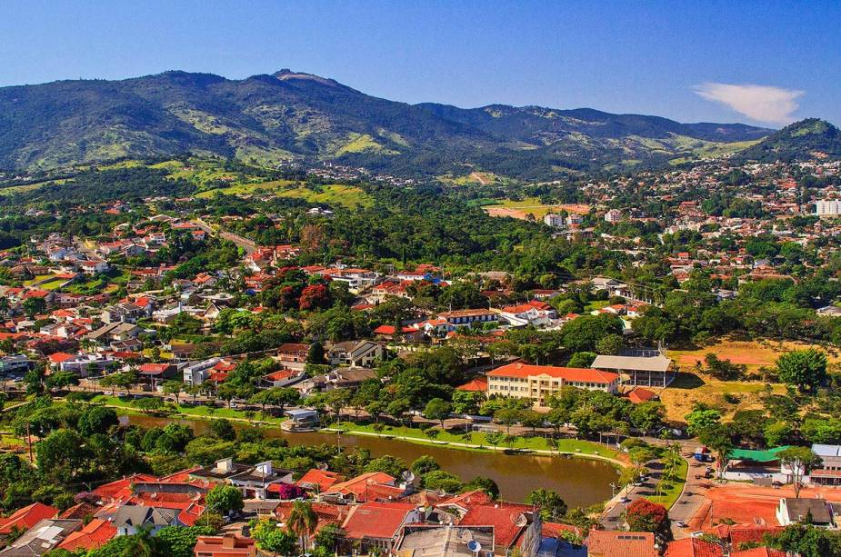
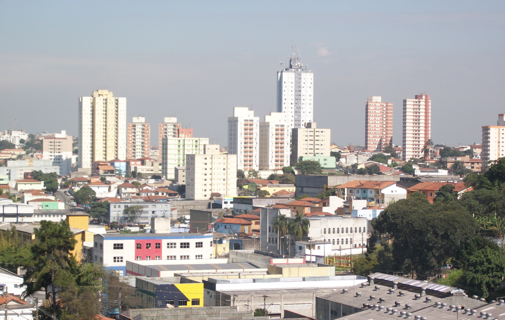
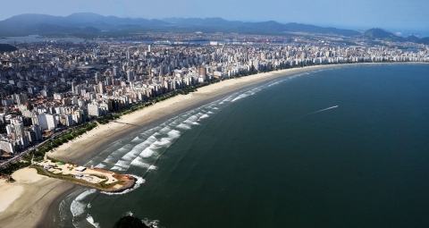
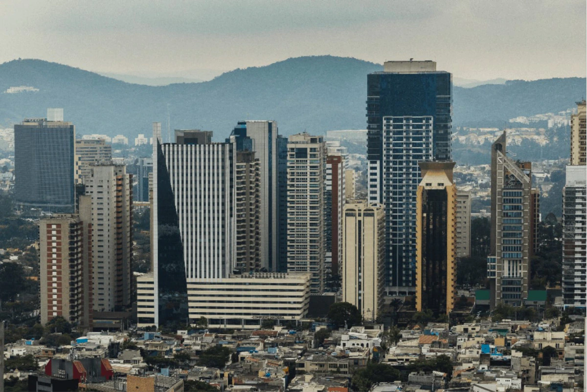
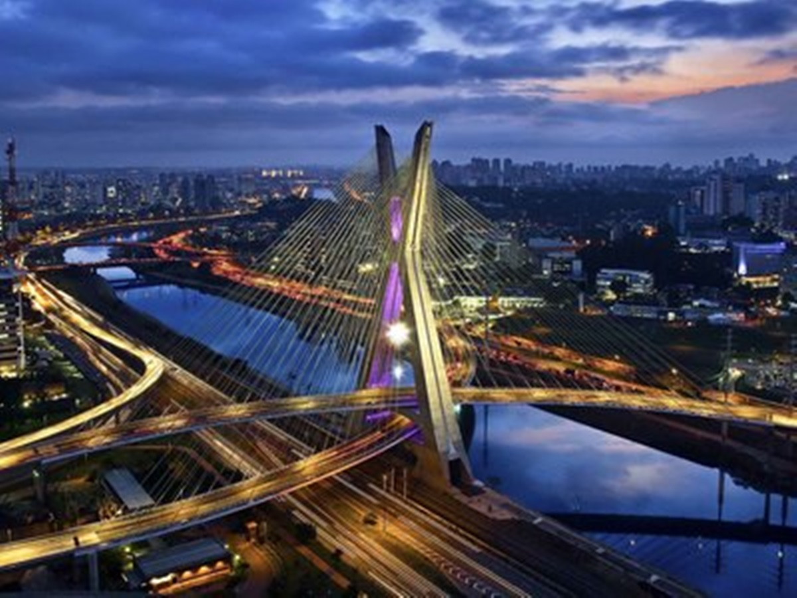

As 10 maiores cidades de São Paulo
São Paulo é o maior estado do Brasil e abriga algumas das maiores cidades do país. A capital da cidade, São
Paulo, é a maior cidade do Brasil e está entre as maiores do mundo. Além da capital, o estado conta com outras
nove cidades que também estão entre as maiores do Brasil. A segunda maior cidade do estado é Guarulhos, que é um
centro de comércio e turismo muito importante para a região. O terceiro maior município de São Paulo é Campinas,
que é conhecida por sua enorme área industrial e abriga a Universidade Estadual de Campinas. Os outros
municípios que compõem as 10 maiores cidades do Estado são: São Bernardo do Campo, Santos, Osasco, Diadema,
Barueri, Jundiaí e Sorocaba. Essas cidades são um importante centro para a economia e desenvolvimento do estado.
Elas possuem diversos setores, como a indústria, serviços, turismo, educação, saúde e transporte. Todas essas
cidades possuem importantes atrações, como shoppings centers, museus, parques, praias, entre outros. Além disso,
São Paulo é o lar de muitas empresas multinacionais, o que atrai grandes investimentos para o estado. Essas
cidades oferecem empregos em diversas áreas, além de serviços e equipamentos modernos para seus habitantes. Elas
são, de fato, o grande motor de crescimento e desenvolvimento de São Paulo.
1º Osasco

Hoje Osasco ocupa uma área de 64,954 km², e sua população estimada no ano de 2019 era de 698
418 habitantes, sendo o 8º município mais populoso do estado de São Paulo. Nossa atividade econômica é forte nos
setores industrial, comercial e de serviços.
O Parque Industrial da cidade, um dos maiores do Estado de São Paulo, destaca-se no cenário econômico com suas
500 indústrias de grande, médio e pequeno portes, com destaque para a metalurgia pesada. Já o setor comercial
reúne mais de 4 mil estabelecimentos de diversos ramos com atuação no atacado e no varejo.
Você sabia que Osasco é a 3ª melhor cidade do Brasil para se empreender? Pois é, uma pesquisa que saiu no mês
passado e que foi feita pela Endeavor em parceria com a ENAP Escola Nacional de Administração Pública, apontou
que Osasco só perde para São Paulo e Florianópolis no quesito de oportunidades para o empreendedorismo.
O estudo levou em consideração sete critérios: ambiente regulatório, infraestrutura, mercado, acesso a capital,
inovação, capital humano e cultura empreendedora.
2º Carapicuíba

O berço da cidade foi o aldeamento de Carapicuíba, fundado por Anchieta em 1580. A Estrada de Ferro Sorocabana
foi fundada em 1875, mas a estação Carapicuíba só em 1926.
Em 1949, integrou o recém-criado município de Barueri, como distrito.
O movimento emancipacionista envolveu a grande maioria dos moradores locais e Carapicuíba foi elevada à condição
de município em 26 de março de 1965.
A cidade conta com diversos parques e praças, sendo os mais famosos deles: o Parque dos Paturis, no bairro Cohab
V/Cohab II; parque Gabriel Chucre, localizado na vila Gustavo Correia, próximo ao Centro de Carapicuíba; Parque
Aldeia de Carapicuíba; localizado no bairro Aldeia de Carapicuíba, que conta com um centro histórico, a Praça da
Aldeia Jesuítica, fundado em 1580, que possui, além de uma igreja católica fundada na época da colonização
portuguesa, uma biblioteca pública, uma exposição permanente sobre povos indígenas e uma delegacia de polícia,
além de um pequeno centro comercial. Na praça, ocorrem várias festas ao longo do ano, como a Festa de Santa
Cruz, entre outras, com música popular e ambiente que lembra pequenas cidades do interior.
3º Campinas

Campinas é uma cidade localizada no interior do estado de São Paulo, no Brasil. Com uma população estimada em
mais de 1,2 milhão de habitantes, a cidade é a terceira mais populosa do estado e um importante centro econômico
e cultural do país. Conhecida por suas universidades, parques e áreas verdes, Campinas é uma cidade vibrante e
diversa.Campinas tem uma rica história que remonta ao século XVIII, quando foi fundada como um pequeno vilarejo.
A cidade cresceu rapidamente ao longo dos anos e se tornou um importante centro de comércio e indústria. Hoje,
Campinas é conhecida por suas indústrias de tecnologia, farmacêutica e de serviços, além de ser um importante
polo de pesquisa e desenvolvimento.Além de sua economia diversificada, Campinas é conhecida por sua vida
cultural intensa. A cidade abriga diversos teatros, cinemas, museus e centros culturais, que oferecem uma ampla
variedade de opções de lazer e entretenimento. Alguns dos principais pontos turísticos da cidade incluem o
Teatro Municipal, o Museu de Arte Contemporânea e o Parque Portugal, também conhecido como Lagoa do
Taquaral.Campinas é também uma importante cidade universitária, com algumas das melhores universidades do
Brasil, como a Universidade Estadual de Campinas (UNICAMP) e a Pontifícia Universidade Católica de Campinas
(PUC-Campinas). Com mais de 30 mil estudantes universitários, a cidade tem uma população jovem e vibrante, que
contribui para sua atmosfera cosmopolita e multicultural.
4º Atibaia

Atibaia, oficialmente Estância Climática de Atibaia, é um município no estado de São Paulo, Brasil.
Localiza-se a uma altitude de 803 metros acima do mar. É uma das onze cidades que integram a Região
Imediata de Bragança Paulista, sendo a segunda cidade mais populosa desta região. A Região Imediata de
Bragança Paulista é uma das onze regiões que compõem a Região Intermediária de Campinas, composta por 87
cidades.
Maior economia da Região Bragantina em termos de Produto Interno Bruto (PIB), sua população, conforme
estimativa do IBGE de 2021, era de 145 378 habitantes.
Atibaia é um dos doze municípios paulistas considerados estâncias climáticas pelo Estado de São Paulo,
por cumprirem determinados pré-requisitos definidos por Lei Estadual. Tal status garante a esses
municípios uma verba maior por parte do Estado para a promoção do turismo regional. Também, o município
adquire o direito de agregar junto a seu nome o título de Estância Climática, termo pelo qual passa a
ser designado tanto pelo expediente municipal oficial quanto pelas referências estaduais.
5º Sorocaba
.jpg)
Sorocaba é uma cidade localizada no interior do estado de São Paulo, com uma população de mais de 680
mil habitantes. Conhecida como "Manchester Paulista" por conta de seu desenvolvimento industrial, a
cidade é um importante centro econômico da região, com uma ampla diversidade de empresas e indústrias,
que vão desde setores tradicionais como têxtil e metalúrgico até tecnologia e inovação.
Além de sua forte economia, Sorocaba também oferece diversas opções de lazer e cultura para seus
moradores e visitantes. O centro histórico da cidade abriga importantes construções, como a Igreja de
Nossa Senhora da Ponte e o Teatro Municipal, além de diversos museus e galerias de arte. Já a região do
Parque das Águas, um amplo complexo de lazer e esportes, é uma ótima opção para quem busca contato com a
natureza e atividades ao ar livre.
Sorocaba também é conhecida por sua gastronomia diversificada e de qualidade, com opções que vão desde
tradicionais restaurantes italianos até bares e lanchonetes com comidas de rua e petiscos regionais. A
cidade ainda abriga diversos festivais gastronômicos ao longo do ano, que atraem turistas de todas as
partes do país em busca de novas experiências culinárias.
Por fim, a cidade de Sorocaba é uma excelente opção para quem busca qualidade de vida e tranquilidade,
sem abrir mão de oportunidades de trabalho e lazer. Com um dos melhores índices de desenvolvimento
humano do país, Sorocaba oferece serviços públicos de qualidade e uma infraestrutura completa, além de
estar situada em uma região estratégica, com fácil acesso a outras importantes cidades do estado.
6º Diadema

Diadema é uma cidade localizada na região metropolitana de São Paulo, com uma população de
aproximadamente 420 mil habitantes. Fundada em 1959, a cidade é conhecida por ser um importante polo
industrial e de serviços. Além disso, Diadema tem investido em projetos de urbanização e preservação
ambiental, o que tem melhorado significativamente a qualidade de vida de seus moradores.
A cidade de Diadema tem uma localização privilegiada, próxima às principais rodovias do estado de São
Paulo e ao Aeroporto de Congonhas. Isso torna a cidade um importante centro logístico e de distribuição,
atraindo diversas empresas e indústrias para a região. Além disso, Diadema tem uma ampla rede de
transporte público, incluindo linhas de ônibus e trens, o que facilita o deslocamento de seus moradores
para outras regiões.
Diadema é também uma cidade culturalmente diversa, com uma grande presença de imigrantes de diversas
partes do Brasil e do mundo. Isso se reflete em sua gastronomia, com uma grande variedade de
restaurantes que oferecem pratos típicos de diferentes regiões. Além disso, há uma grande variedade de
espaços culturais, como teatros, museus e bibliotecas, que oferecem diversas opções de lazer e
entretenimento.
Por fim, Diadema tem investido em projetos de preservação ambiental e urbanização, o que tem
transformado a cidade em um exemplo de desenvolvimento sustentável. Há diversos parques e áreas verdes
espalhados pela cidade, como o Parque do Paço, que oferecem opções de lazer e atividades ao ar livre
para toda a população. Além disso, a cidade tem investido em projetos de revitalização de áreas
degradadas, transformando-as em espaços públicos de convivência e lazer.
7º São Bernardo do Campo
 São Bernardo do Campo é uma cidade da região metropolitana de São Paulo, com uma população de mais de
800 mil habitantes. Fundada em 1812, a cidade é conhecida por sua forte indústria automotiva, sendo a
sede de importantes montadoras e empresas do setor.A cidade oferece aos seus moradores e visitantes
diversas opções de lazer e cultura. O Parque Estoril é um grande espaço verde, ideal para caminhadas e
atividades físicas ao ar livre. O Shopping Metrópole é um dos principais centros de compras da região,
com diversas lojas e restaurantes. Além disso, a cidade conta com uma grande variedade de bares,
restaurantes e casas noturnas, que atraem pessoas de todas as idades.São Bernardo do Campo também é
conhecida por sua rica história e cultura. A cidade abriga o Museu Histórico Municipal, que preserva a
memória da cidade e conta a história de seu povo. A cidade também é palco de diversos eventos culturais
ao longo do ano, como o Festival de Inverno de São Bernardo e o Carnaval de São Bernardo.Com sua
economia em constante crescimento, oferta de serviços e opções de lazer, São Bernardo do Campo é uma
cidade em constante evolução. A cidade tem muito a oferecer aos seus moradores e visitantes, combinando
tradição e modernidade em um ambiente acolhedor e vibrante. Seja para morar, trabalhar ou visitar, São
Bernardo do Campo é uma cidade que merece ser explorada e admirada.
São Bernardo do Campo é uma cidade da região metropolitana de São Paulo, com uma população de mais de
800 mil habitantes. Fundada em 1812, a cidade é conhecida por sua forte indústria automotiva, sendo a
sede de importantes montadoras e empresas do setor.A cidade oferece aos seus moradores e visitantes
diversas opções de lazer e cultura. O Parque Estoril é um grande espaço verde, ideal para caminhadas e
atividades físicas ao ar livre. O Shopping Metrópole é um dos principais centros de compras da região,
com diversas lojas e restaurantes. Além disso, a cidade conta com uma grande variedade de bares,
restaurantes e casas noturnas, que atraem pessoas de todas as idades.São Bernardo do Campo também é
conhecida por sua rica história e cultura. A cidade abriga o Museu Histórico Municipal, que preserva a
memória da cidade e conta a história de seu povo. A cidade também é palco de diversos eventos culturais
ao longo do ano, como o Festival de Inverno de São Bernardo e o Carnaval de São Bernardo.Com sua
economia em constante crescimento, oferta de serviços e opções de lazer, São Bernardo do Campo é uma
cidade em constante evolução. A cidade tem muito a oferecer aos seus moradores e visitantes, combinando
tradição e modernidade em um ambiente acolhedor e vibrante. Seja para morar, trabalhar ou visitar, São
Bernardo do Campo é uma cidade que merece ser explorada e admirada.
8º Santos

Santos é uma cidade brasileira localizada no estado de São Paulo. É um importante porto comercial e
turístico, sendo a segunda cidade mais importante do estado. É famosa por suas belas praias, seu
calendário de festividades, seu Centro Histórico e seu museu de artes modernas. A cidade é a casa do
Santos Futebol Clube, o maior campeão da história do futebol brasileiro, vencedor de oito Copas do
Brasil, seis Campeonatos Paulistas, três Copas Libertadores e duas Copas Intercontinentais. Santos tem
um rico patrimônio arquitetônico, incluindo o Centro Histórico, que data de 1546, e possui muitos
construções históricas, entre elas o Convento de Nossa Senhora do Carmo. A cidade também oferece
inúmeras atrações turísticas, como as praias de Santos, a Lagoa da Pampulha e o Pelourinho de
Guararapes. Santos é também um importante centro comercial e financeiro, com grandes indústrias, centros
de convenções e importantes eventos culturais. A cidade é uma excelente opção para quem procura um
destino com muita história, cultura e diversão. É o lugar ideal para quem procura um destino que combine
tranquilidade com entretenimento.
9º Barueri

Barueri é um município da Região Metropolitana de São Paulo, no estado de São Paulo, na Região Sudeste
do Brasil. Dista 26 km da Praça da Sé, marco zero da capital paulista. O município é formado pela sede e
pelos distritos de Aldeia, Jardim Belval e Jardim Silveira[7][8].
Sua população foi estimada no ano de 2010 em 240 656 habitantes,[9] pelo Instituto Brasileiro de
Geografia e Estatística sendo a 29º cidade mais populosa do Estado[10] e a terceira cidade mais populosa
da Microrregião de Osasco. Sua área é de 66,14 quilômetros quadrados, o que resulta numa densidade
demográfica de 3 638,5 habitantes por quilômetro quadrado.
Barueri, assim como a maior parte dos municípios da Região Metropolitana de São Paulo, tem uma
temperatura média anual de 18 graus centígrados e sua vegetação original é a da Mata Atlântica. A
economia de Barueri é baseada na arrecadação de impostos provenientes da prestação de serviços. Em 1973,
um terreno de 500 hectares comprado em Barueri, a Fazenda Tamboré, deu origem a um dos bairros mais
famosos do Brasil, Alphaville[11]. Hoje, o bairro é um dos maiores polos industriais e comerciais do
Estado e gera a maior parte dos impostos da cidade.
A cidade ganhou notoriedade nacional através do esporte. Com a construção da Arena Barueri, a cidade
passou a sediar grandes eventos esportivos e o clube Grêmio Barueri disputou a Série A do campeonato
Brasileiro 2009.
10º Guarulhos

Guarulhos é uma cidade localizada na região metropolitana de São Paulo, no Brasil. Com uma população de
mais de 1,3 milhão de habitantes, a cidade é a segunda mais populosa do estado de São Paulo e uma das
mais importantes do país. Conhecida por seu aeroporto internacional, Guarulhos é um importante centro de
transporte, com uma infraestrutura completa que oferece diversas opções de lazer, cultura e turismo.A
cidade de Guarulhos possui uma rica história que remonta aos tempos pré-coloniais, quando era habitada
pelos índios guarus. Hoje, Guarulhos é uma cidade moderna, com uma arquitetura variada que inclui
edifícios históricos, museus e centros culturais. Alguns dos principais pontos turísticos da cidade
incluem o Museu de História de Guarulhos, o Parque Bosque Maia e o Teatro Adamastor.Além de seu
aeroporto internacional, Guarulhos é um importante centro de comércio e indústria, com uma
infraestrutura completa que oferece diversas opções de lazer, cultura e turismo. A cidade abriga muitas
empresas nacionais e internacionais, além de ser um importante polo de tecnologia e inovação. Com sua
localização estratégica, Guarulhos é um importante centro logístico para o país, com um dos maiores
aeroportos da América Latina.Guarulhos é também um importante centro educacional, com muitas
universidades e faculdades renomadas. A cidade oferece diversas opções de ensino superior em áreas como
engenharia, administração, direito, ciências da saúde, entre outras. Além disso, Guarulhos possui um
sistema de transporte público eficiente, com diversas linhas de ônibus, metrô e trem, que conectam a
cidade a outras regiões do estado e do país.